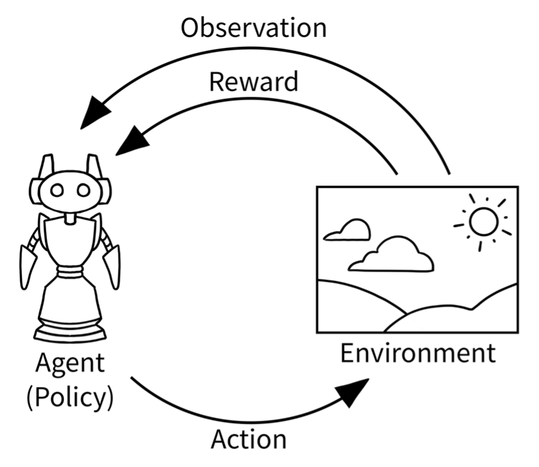

Reinforcement Learning#
Objectives#
Definitions & Understanding How :py:class:`~Trainee`s fits into a RL framework.
How-To Train and retrain a
Traineeduring RL.API References
Trainee.set_auto_analyze_params(),Trainee.train(), andTrainee.react().
Prerequisites#
You have successfully installed Howso Engine
You have a understanding of Howso Engine workflow and concepts
You have a basic understanding of the concepts of RL and a python RL framework, preferably Gymnasium.
Notebook Recipe#
There is a RL recipe which supplement the content this guide will cover and provide a complete example using the Cartpole RL game.
Concepts & Terminology#
To understand this guide, we recommend being familiar with the following concepts:
Additional concepts to be familiar with are Gymnasium RL Framework and Cartpole.
How-To-Guide#
In the learning cycle of RL as shown below, Howso Engine acts as the Agent. As an Agent, Howso Engine both outputs an action value as well as intakes the observation and resulting reward. Once the reward and observations are processed, the Howso Engine is trained again based on the results and another action is output.
{kind=link}
Image Source: https://gymnasium.farama.org/content/basic_usage/
Setup#
The Howso Engine Trainee must be initalized in the RL framework before the learning loop. As part of the setup process, enabling Trainee.set_auto_analyze_params()
can help the user analyze the Trainee after all training steps. This methods eliminates the need to manually analyze after training, which can be done.
trainee.set_auto_analyze_params(
auto_analyze_enabled=True,
context_features=self.context_features,
action_features=self.action_features,
)
Action#
In the Action phase, a standard Trainee.react() call will provide the resulting action. Most of the parameters have been covered in the other Howso Engine guides,
however into_series_store may be new for most users. Since we are using the Trainee to learn a series of actions, underneath the hood Engine is treating the contexts and cases
as part of a series. The parameter into_series_store allows the user to label the series store, which in this case, is the round or loop number.
react = trainee.react(
desired_conviction=desired_conviction,
contexts=[[observation, self.desired_score]],
context_features=self.context_features + self.reward_features,
action_features=self.action_features,
into_series_store=str(round_num),
details=details,
)
action = react['action']['action'][0]
return action
Environment, Reward, and Observation#
This step processes the action from Action phase and outputs a observation and reward. The reward and observation is sent back to the Trainee where it can be used to train the Trainee. These steps are generally handled by your RL framework.
Agent#
This is the step where Howso Engine learns from the previous loop, by training in the new reward value. The Trainee should be analyzed after every train step, which
should be automated by the Trainee.set_auto_analyze_params() method.
trainee.train(
features=self.reward_features,
cases=[[score]],
series=str(round_num),
)
Completion#
The RL learning phase is repeated until the desired stop condition, whether it is a termination due to result or a truncation such as a limited number of steps. The Trainee has now been trained and analyzed using Reinforcement Learning.